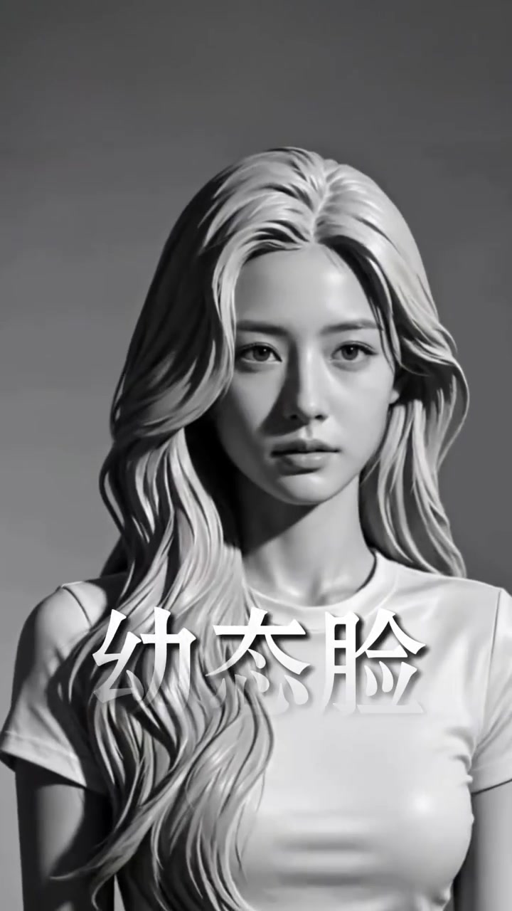
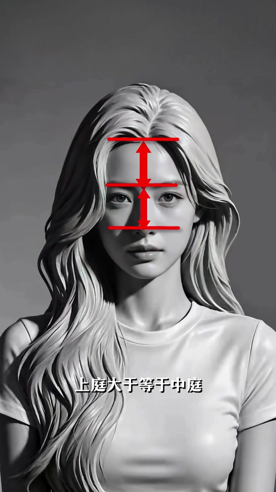
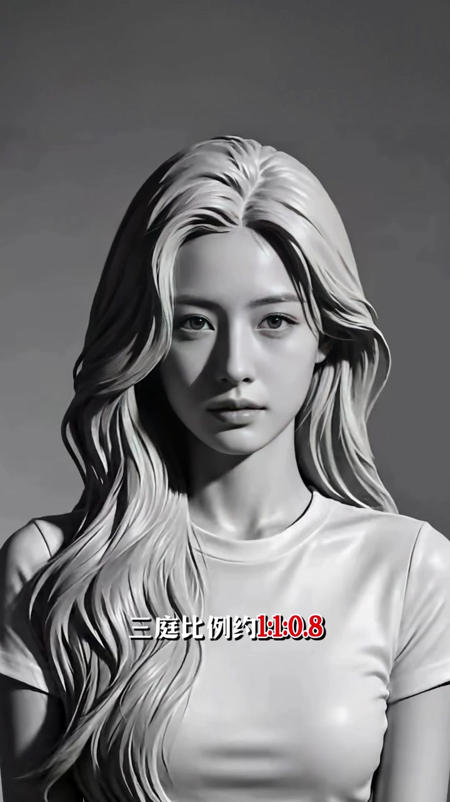
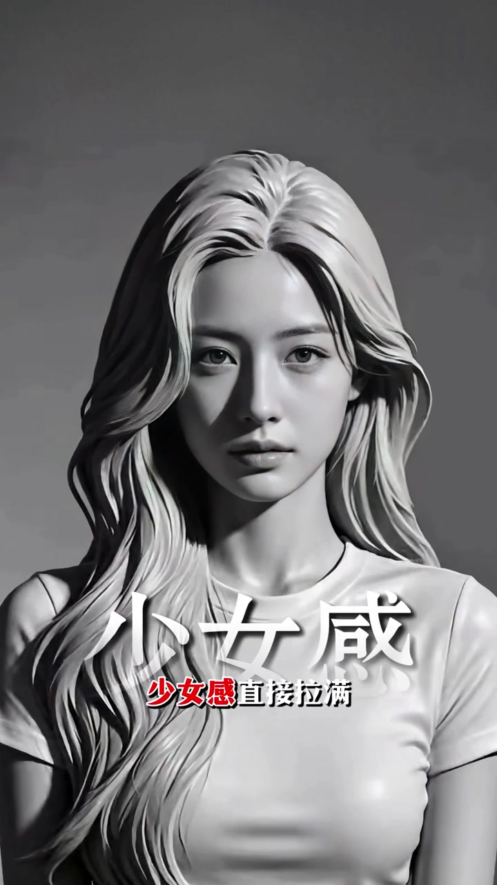
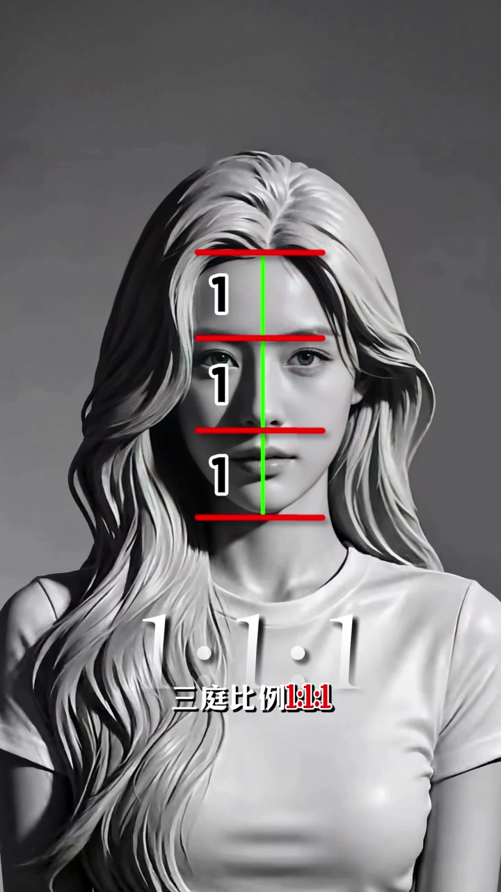
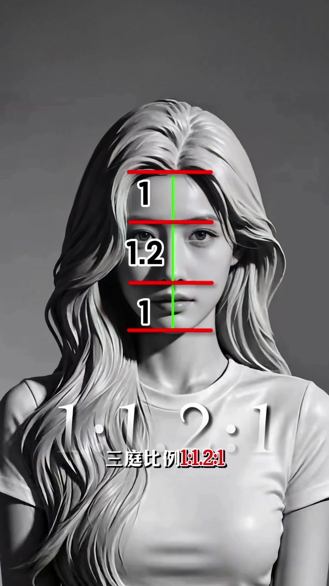
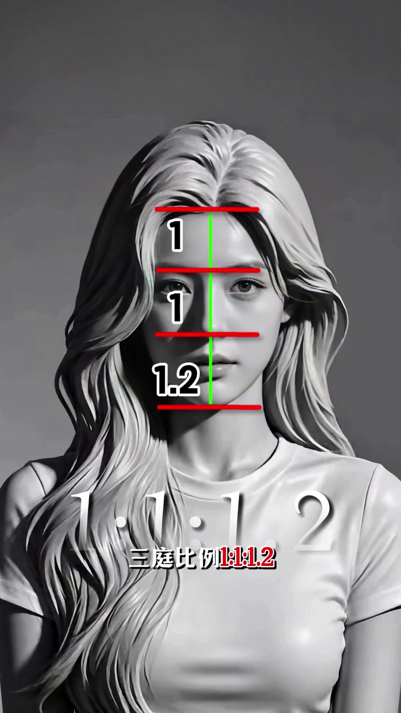
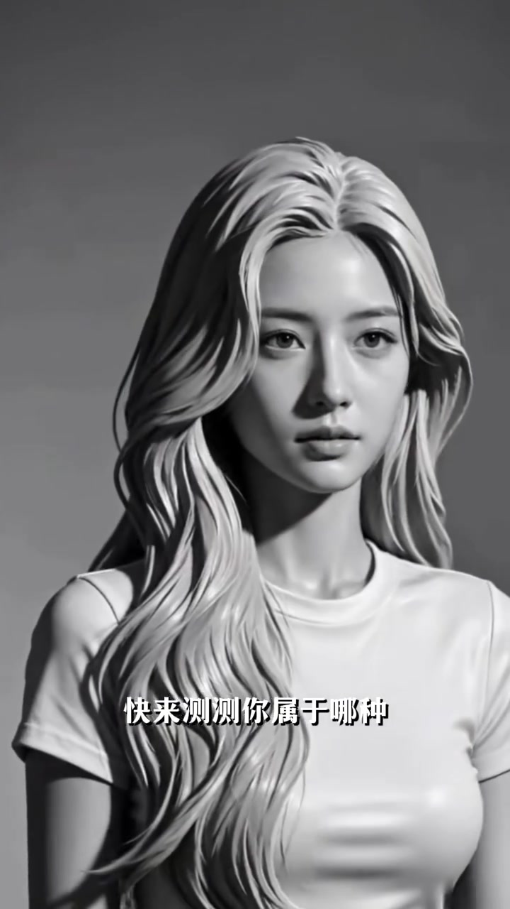

灰阶头像当尺子，讲「三庭」而不是五官清单
整片几乎是同一张灰阶女头像：中分长卷、白 T、侧光。红线与绿中轴线不断叠上去，像把脸当成可量的尺子。话题标签落在变美、五官分析、面部中轴线、面部光影美学与幼态脸长相。语气是口播口号，节奏很快。
说明：Whisper 把「幼态脸 / 上庭 / 三庭 / 少女感 / 御姐范 / 长下庭脸」等听成「右太脸 / 上停 / 三停 / 上女感 / 预解范 / 长假停脸」。下文以可见字幕为准；末尾转录区仍保留原始分段。
第一型：幼态脸——上庭大于等于中庭，下庭约 0.8
开场大字直接钉标题「幼态脸」。下一秒画面拉出红标尺：发际线到眉、眉到鼻底两段箭头，字幕写「上庭大于等于中庭」。随后红字比例出现：约 1:1:0.8——下庭明显缩短。
口播把观感收成两句：可爱又无害，少女感直接拉满。这里是审美标签，不是医学诊断。
画面字幕：「幼态脸」「上庭大于等于中庭」「三庭比例约 1:1:0.8」「可爱又无害」「少女感直接拉满」




第二型：标准脸——三庭 1:1:1，耐看不出错
切到「这是标准脸」。绿中轴线贯穿，四条红水平线把上中下三庭切开，数字全是 1。大字半透明写出 1:1:1，红字幕重复「三庭比例 1:1:1」。
评价很克制：不算一眼惊艳，但耐看又不出错——把标准脸放在「稳妥」而不是「最美」的位置。
画面字幕：「这是标准脸」「三庭比例 1:1:1」「不算一眼惊艳」「但耐看又不出错」

第三型：成熟脸——中庭偏长，典型御姐范
大字换成「这是成熟脸」。红箭头沿鼻梁往下指，字幕「中庭偏长」。比例图给出 1:1.2:1——中间那段从眉到鼻底被拉长。叠字收束为「典型御姐范」。
这是视频自己的风格标签：把中庭加长与「御姐」气质绑在一起，属于主观审美框架。
画面字幕：「这是成熟脸」「中庭偏长」「三庭比例 1:1.2:1」「典型御姐范」

第四型：长下庭脸——1:1:1.2，稳重带知性
第四段标题是「长下庭脸」。比例图把下庭标成 1.2，整体写成 1:1:1.2。口播给的气质是：稳重有力量，还带着知性魅力。
至此四型讲完：缩短下庭→幼态；三庭等分→标准；拉长中庭→成熟；拉长下庭→长下庭。整条逻辑都围着「三庭比例」转。
画面字幕：「这是长下庭脸」「三庭比例 1:1:1.2」「稳重有力量」「还带着知性魅力」

结尾：快来测测你属于哪种
头像仍在，字幕变成互动句「快来测测你属于哪种」。视频没有给出测量步骤或工具，只是把四型框架甩给观众对照。
